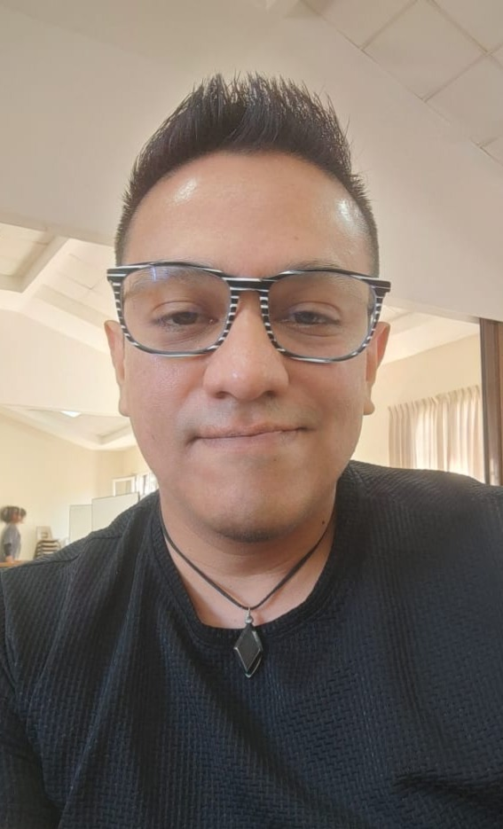

Jonathan Reyes Novoa | WDD 130

Hello! My name is Jonathan Reyes Novoa, and I am a WDD 130 student from San Salvador, El Salvador. I enjoy beach volleyball, soccer, video games, and spending time with my family and friends.
I am studying web development so I can work as a full stack developer while living in El Salvador. I also hope to offer web design services to local clients. I own a small software company, Fantasy Software SAS, that helps people find solutions for their projects.
I am excited to keep learning. I see AI as a tool that can help developers find errors, improve software, and build useful features.